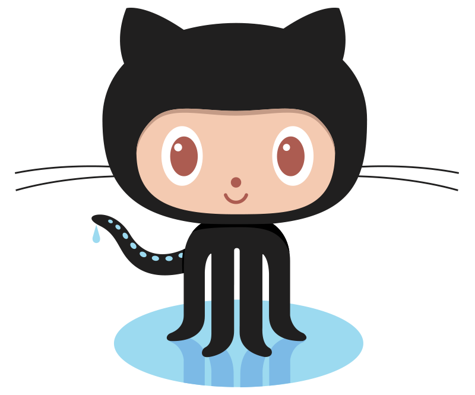
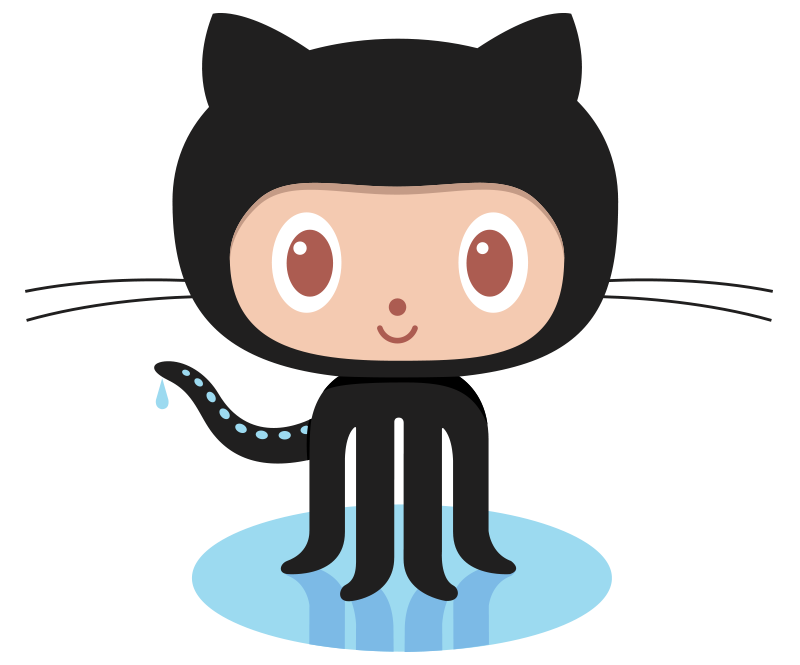

As some may know I recently moved out to Seattle. It was a big move as a born and raised Brooklyn, NY native. I recently started looking for community and ways to get to know this great town. Seattle has an amazing mix of history, nature, technology and a myriad of firsts, plus bests. I recently had the pleasure to come across an amazing organization called TCAT – The Taskar Center for Accessible Technology. They are an organization that is housed in the Paul G. Allen School of Computer Science at The University of Washington. TCAT is utilizing and making open source technologies to help others with disabilities live a full and equal life. They throw frequent events so always make sure to check their website or Eventbrite for more!
So where I am going with this? Well often people feel the only way they can give back is by having money to give. You may find this very surprising, but that isn’t the only possibility. Especially as you grow your skills. You will find that you can give back in many ways. Not just by providing a warm body in the room, but providing skills you bring to the world every day. We often may be looking to meet new people, find things to fill our time with or wish we could be doing something more than just at the scale of ourselves. Well I want to encourage you to look for non-profits in your local area. In the tech world there are even open source non-profit projects you can join from around the world. Check this out!
The best part? You may actually learn a thing or two and have yours eye opened just a bit wider! The TCAT event centered around modifying toys so that those who normally cannot utilize them could. This involved soldering on mono style audio jacks that can easily be swapped with different forms of input. For example something that can be bitten, or mashed like a button or a pad trigger to go next to ones head. We were able to modify these toys so that everyone could have access to the joy they bring as they buzz, light up, and move! Something we often take for granted.
From what you can see above we were utilizing the soldering iron to modify different toy types. We often don’t realize with just a simple modification we could do so many things. For this one we would take each button on the wireless remote that triggers a triceratops to walk and make noise (awesome toy!) and modify with those mono plug jacks allowing us to use a myriad of triggers!
As you can see we were well supplied with tools and toys to modify. They fed us too. Incredibly generous! The next one we modified was a train that would light up and move!
You can see in the photo we were attaching wires to the switch terminals and then routing the mono plug through the back of the chassis in order to allow for easy adaptability.
Check out the completed build! It’s amazing what people can do when they think outside the box and give themselves to a greater good for others. Its often in life we look to ourselves and what we face, but actually participating in making others lives can be quite rewarding. I encourage people to find causes and events related to them that they enjoy. Whether it be for animal welfare, the environment, the elderly, the disabled, poverty, healthcare, or a myriad of other awesome causes. Just get started! You can find events on Meetup, Eventbrite, Timeout to name a few. Please feel free to leave your recent discoveries or what you are passionate about in the comments and get out there…
…you may just find yourself enriching your life and so many others!


 
